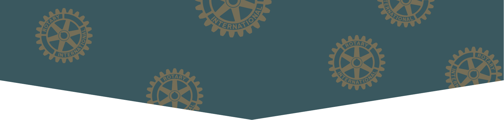

什麼是影響圈？

影響圈是台北社企扶輪社所推動的社會創新與共善服務。
台北社企扶輪社是一個結合國際扶輪社網絡及社企核心理念的扶輪社。我們致力於結合商業及公益力量，讓國際扶輪中各行各業的專業人士與社會創業家，一起解決台灣甚至世界的問題。影響圈係為台北社企扶輪社所推動的共善平台，陪伴每一個地區扶輪社發揮更大的社會影響力。
影響圈是一種結合社區機構既有服務基礎與企業創新動能所設計出的一種互助生活模式，源自「團結經濟」與「社會影響」。
團結經濟
「團結經濟」是一種介於計劃經濟和市場經濟之外的新經濟模式，主要針對有形資產匱乏、市場競爭力弱、社會影響力不足的群體，藉助自身無形資產，通過合作互助方式改善生活質量的生產生活模式。
社會影響
「社會影響」係指任何公共的或私人的活動對人類社會造成的後果。放在扶輪社群之中，「影響圈」係指身為社會一份子的扶輪社與社友，如何利用創新方法、流程、模型與系統，協助社會弱勢的「生計-生活-生命-生態」，達到社會與環境的共好與永續。
如何散播影響圈?
影響圈的第一步是推動Line@公益募捐平台，提供「公益捐助」與「社企商品」二大媒合服務。
藉由影響圈(Social Impact Circle)的倡議，讓扶輪社不只是一個社交圈(Social Circle)，更是社會的影響力中心。
公益捐助

社會公益的各項專案由各協會、基金會提案上架，本平台未收取服務費與抽成，捐款人的每筆善款皆全額交由提案方使用於上架專案。
社企商品
社企商品由「社會企業」或「兼益/共益公司」申請上架，本平台初期亦不收取服務費，僅作為提供一個曝光管道，供社會企業家們的產品爭取更多的銷售管道。
我們為何參與?
想改變什麼?